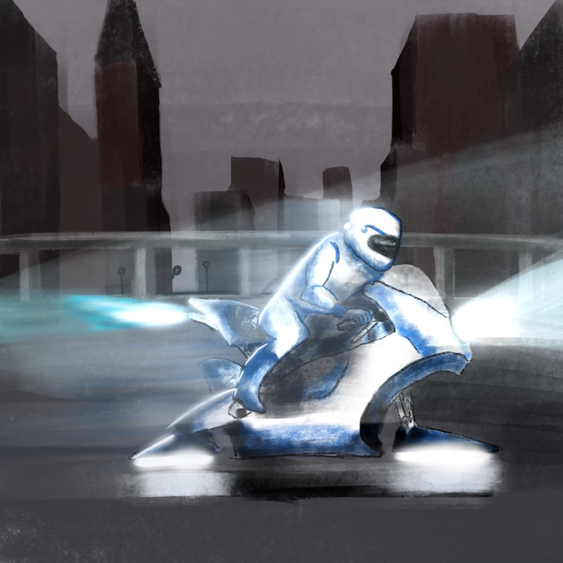
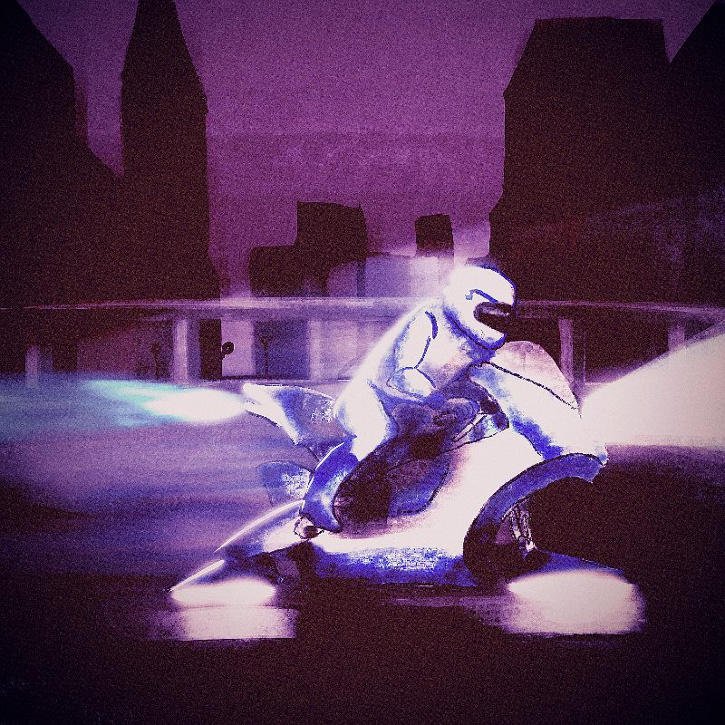

Creacover 2019 : J11
La musique du jour est Futuristic Eyes de Mike-Otchers. (avec Oceanically).
Encore une musique "amateur" découverte par le biais d'une connaissance. Il y a quelque chose qui me parle dans cet air là; une sonorité futuriste qui fait penser à l'ère des machines.
Il y a sur mon image un motard du futur, en course poursuite apparemment. La ville derrière lui est désolée, éteinte, perdue. Les machines dominent.
J'ai d'abord dessiné sur Procreate, avec beaucoup de mal pour le jeu de lumières de la moto. La perspective de la ville m'a un peu bloquée, mais je comprends mieux comment ça fonctionne. Ouf.

J'ai ensuite travaillé l'image avec Pixlr : retourches de luminosité, de contraste, de couleurs, de netteté et de grains, avec en prime un filtre un peu vintage qui donne le côté "retro-futur" que je cherchais. Et voilà le travail ! Merci Diatomée ;)
